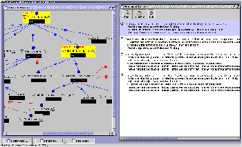

Overview
Little-JIL is a maturing process programming language. Processes are
written in a simple visual syntax. While the editor enforces proper syntax,
there are a number of semantic requirements that are not guaranteed. The
semantic checker described here checks a Little-JIL process against rules
expressed in first-order logic, and provides feedback to the programmer
identifying error conditions and providing useful warnings. The checker
applies xlinkit, a consistency checking tool for XML documents, along with a
growing set of custom rules, to check Little-JIL processes represented in an
XML notation. Incorporating over a dozen rules and a visual reporting tool,
the Little-JIL semantic checker provides clear and valuable information
ranging from common errors to detection of complicated data flow anomalies.
The Project
|  |
| Checker UI Screenshot |
The work available here was developed during the summer of 2002 at the
Williams College Computer Science Department by Shimon Rura under the direction of Prof. Barbara
Lerner. A poster describing this work has been accepted to
ICSE 2003. A paper
describing this work has been submitted to EWSPT 2003.
Features of the Little-JIL semantic checker:
- Little-JIL semantic rules are encoded
in first-order logic (using xlinkit syntax)
- the checker runs as a standalone tool that reads a Little-JIL
process from a file and invokes xlinkit and XML tools to carry out
semantic checking and message reporting
- a graphical user-interface for the checker shows detailed
error/warning messages and highlights relevant parts of the process
diagram
An additional by-product of the development is Rule2Latex, an
xlinkit-rule to LaTeX pretty-printer, making the first-order logic rules
easier to read [example].
Little-JIL is being developed collaboratively with researchers in the
LASER research lab at the University of Massachusetts.
This material is based upon work supported by the National
Science Foundation under Grant No. CCR-9988254. Any opinions,
findings, and conclusions or recommendations expressed in this
material are those of the authors and do not necessarily reflect
the views of the National Science Foundation.
shimon@rura.org
{kind=link}